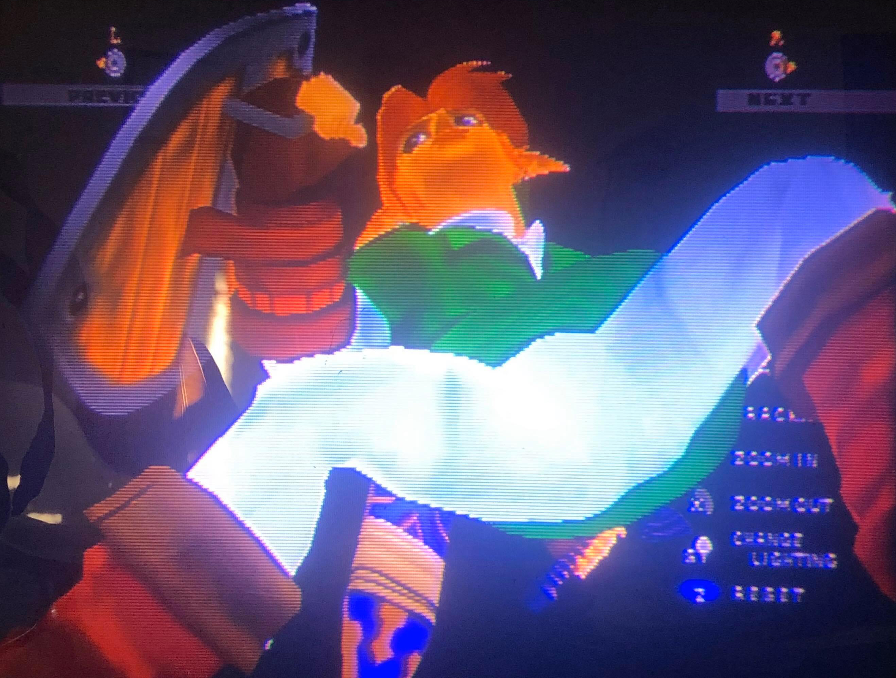

Hit Pause by 0campop005
So I played Super Smash Bros. Melee a lot when I was a kid, which wasn’t uncommon considering how every boy my age played it back then and how popular the game was in general
The game has this really unique pause menu that freezes all the fighters mid battle and gives the player the ability to move around the frame on different axes
(You could also do the same thing with the in-game collectible trophies).
I remember this one time
I was playing with a friend and seeing him hit the pause button to look underneath Princess Peach’s dress which I thought was pretty interesting because the developers did bother to give the character model an undergarment
and gave players the ability to potentially look at those undergarments (as if Nintendo didn’t know that their target demographic were teenage boys)
Didn’t get me going in the same way it got him going though
But out of curiosity one night I booted up the game and started a match with some of the male characters.
Marth and Roy from Fire Emblem and Link from The Legend of Zelda all wore tunics which I, at the time, thought were kind of close enough to skirts?
I was like,
hm maybe the developers put some detail into their underskirts too?
Because I guess I’d be into that?
I tossed Captain Falcon in here as well because his clothes were always so tight and I always really appreciated it.
And I was so fucking hot for these CGI bulges!!!! that probably weren’t actually anything significant or intentional at all but I just remember just sitting there and staring for hours not knowing what my body was doing or what was going on.
Glossy-eyed, dick hard, with my drooling mouth wide open; so began one of the most formative activities I’d partake in as a kid.
It was silly
but it was also a way to explore the queerness I wouldn’t be able to put into words till I was much older.
AKA I had no idea I was gay
Just loved video games
and video game bulges.....
